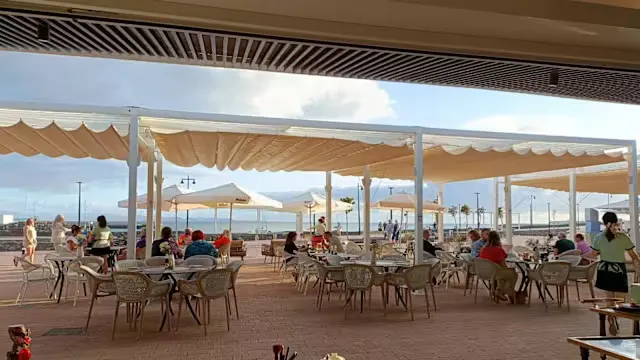

No te quedes
mirando la playa.
Fuerteventura se disfruta dentro y fuera del agua. Recorre sus paisajes, descubre sus pueblos, busca miradores y encuentra planes diferentes para cada día.
```Una isla para moverse.
Puedes pasar el día en una playa, pero también puedes recorrer carreteras entre volcanes, visitar pueblos, caminar por senderos, practicar deportes acuáticos o simplemente buscar un lugar desde el que contemplar el paisaje.
Aquí tienes algunas ideas para empezar.
¿Qué podemos hacer?
Algunas experiencias para disfrutar Fuerteventura más allá de tumbarse en la arena.

Actividades acuáticas
Surf, windsurf, kitesurf y otras formas de disfrutar del Atlántico.
.webp)
Recorrer las dunas
Caminar entre arena y océano en el entorno de Corralejo.

Descubrir pueblos
Una forma diferente de conocer el interior de la isla.

Recorrer la isla
Coge el coche y deja que el paisaje marque el camino.

Explorar el sur
Playas, costa y pueblos en la zona de Morro Jable.

Buscar un mirador
Parar, mirar y disfrutar del paisaje.

Conocer El Cotillo
Pueblo marinero, playas y ambiente tranquilo.

Hacer una escapada
Una parada sencilla para cambiar de paisaje.

Camina entre las dunas.
El Parque Natural de las Dunas de Corralejo ofrece uno de los paisajes más reconocibles de Fuerteventura.
Lo mejor es recorrerlo sin prisa y combinar las dunas con alguna de las playas de la zona.
Sal de la costa.
El interior de Fuerteventura tiene otra personalidad completamente diferente.
Una isla que pide carretera.
Las distancias permiten organizar fácilmente diferentes rutas durante una estancia. El paisaje cambia constantemente y muchas veces el propio trayecto termina siendo parte del plan.
No hace falta intentar verlo todo en un día. Elige una zona y disfruta del recorrido.

A veces el mejor plan es parar.
Fuerteventura tiene paisajes que merecen simplemente unos minutos de atención. Busca un punto alto, una carretera tranquila o un lugar desde el que ver cómo cambia la luz.

Caleta de Fuste.
Una zona cómoda para combinar playa, paseo y servicios, especialmente si buscas un plan sencillo sin alejarte demasiado.
Ahora toca elegir tu plan.
Si todavía no sabes por dónde empezar, descubre las playas, pueblos y lugares de Fuerteventura.
```